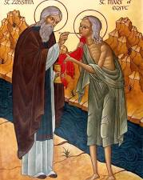

The Eucharistic miracle associated with St. Mary of Egypt is a 6th-century event (chronologically linked to the 4th/5th-century saint) where she miraculously walked across the Jordan River to receive Holy Communion. The miracle is detailed in her life account, which was recorded by St. Sophronius, Patriarch of Jerusalem in the 7th century.
This event is recognized in the Catholic Church as an extraordinary, mystic Eucharistic event, contrasting with physical bleeding host miracles. The account is historically recorded in Eastern Christian tradition, primarily found in the Life of St. Mary of Egypt attributed to St. Sophronius. The miracle is cataloged in the international database of recognized Eucharistic miracles originally compiled by Blessed Carlo Acutis.